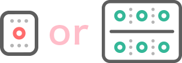
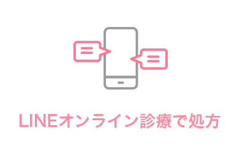

どちらでピルの処方をご希望ですか？
ピルについて
低用量ピルとアフターピルはどちらも避妊を目的とした薬です。
低用量ピルは毎日服用することで排卵を抑制し、子宮内膜の増殖を抑えることで受精卵が着床しにくい状態を作ります。
また、低用量ピルには女性ホルモンが含まれており、月経痛や月経不順、月経前症候群などの症状の緩和にも効果があります。
一方、アフターピル（モーニングアフターピル）は、低用量ピルの服用を忘れた場合や、避妊をしなかった性交後、コンドームといった避妊具が適切に使用できていなかった場合、さらにレイプや性的暴行後などの望まない妊娠を避けるための緊急避妊に用いられる薬です。
一時的に子宮内膜に受精卵が着床しにくい状態を作り出し、72時間以内に服用すれば約95％避妊することができ、72時間を過ぎてしまった場合でも、120時間以内であれば高い成功率で避妊することができます。
不妊症や後遺症が残る可能性もありませんので、安心してくださいね。
料金
-
低用量ピル(診療費込)
税別価格
¥2,000～4,000円(税別)
＋送料
服用方法：毎日一回服用
-
120時間対応アフターピル(診療費込)
税別価格
¥12,800(税別)
＋送料
服用方法：120時間以内に1錠服用
オンライン診療の流れ
-
1
当サイトからお申込み
「LINEオンライン診療で処方」のボタンから進み、ご希望の診察時間やご連絡ラインIDをフォームに入力して送信してください。
ご希望の時間になりましたら医師から通話のご連絡を差し上げます。 -
2
オンライン診療開始
「準備が整いましたら、診療を始めさせていただきます。
診療は5分程度で終了しますが、電波状況の安定した場所で行うようにしてください。 -
3
お薬の処方・決済・発送
「診察が終了しましたら、お支払い用のURLをお送りしますのでクレジットカードにてお支払いください。決済の確認ができ次第ご指定の住所にお薬を発送致します。
最短で翌日にお手元に届きます。
※お支払いはクレジット決済のみとなります。
よくある質問
- Q 受診した事を知られたくありません
-
A
誰かに知られる事なく診察を受ける事ができます。
当院の診療は全て保険適応外となっており、健康保険証に記録などが残りません。
- Q 未成年でも利用できますか？
- A 18歳以上であれば、オンライン診療のご利用は可能になっております。
- Q ジェネリックでも効果がありますか？
- A 先発薬と同じ成分を使用して開発された後発薬をジェネリックといいます。したがって、先発薬とジェネリックは同成分のお薬なので、効果や安全性も同等です。
- Q 行為から3日経過していても効果はありますか？
- A 72時間を過ぎたら完全に効果がなくなるわけではありません。避妊率が低下しますがピルの服用をおすすめします。また、120時間対応のアフターピルもお取り扱っております。
- Q 避妊できたかどうかいつわかりますか？
- A 次の月経が起これば避妊成功となります。まれに、不正出血や着床出血がおこる場合がございます。アフターピルを使用してから約20日経過したら、必ず妊娠検査を行い確認して下さい。
- Q 副作用はありますか？
- A 個人差がありますが、吐き気、嘔吐、むくみ、下痢、倦怠感、頭痛、眠気、めまい、不正出血、生理不順などの症状が発生する場合がございます。
- Q アフターピルはいつ服用すれば良いですか？
- A 可能な限り早い段階での服用をお願いします。
- Q アフターピルと低用量ピルを併用しても大丈夫ですか？
- A 低用量ピルを飲んでる場合は、基本的にアフターピルを服用する必要がありません。
- Q アフターピルは今後の妊娠に影響ありますか？
- A 今後の妊娠に影響をもたらすことはありません。
当院について
当グループのクリニックは主要都市を軸に全国展開しており、全てのクリニックが駅から徒歩数分という立地にあります。
患者様のライフスタイルに合わせて、お仕事の帰りや用事のついでにサっとお立ち寄りいただいたり、お待たせしない環境づくりに力を入れており、患者様に寄り添った診療を気軽に相談できるクリニックを目指しております。